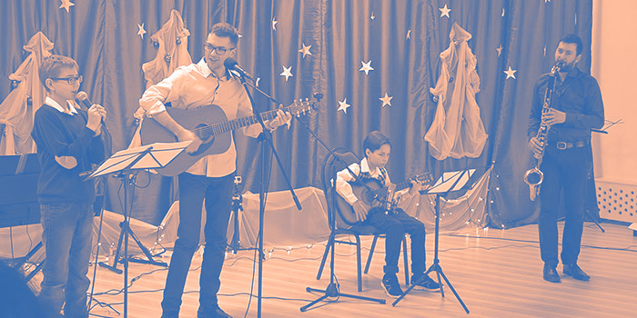
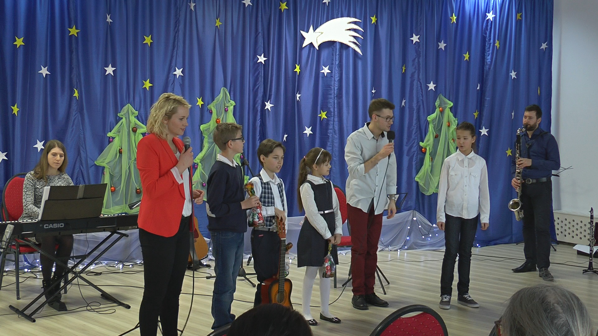
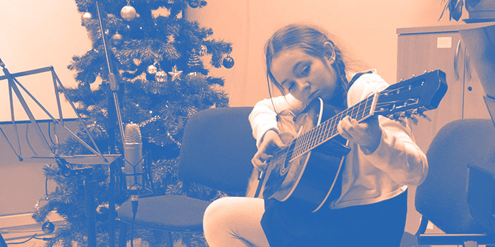
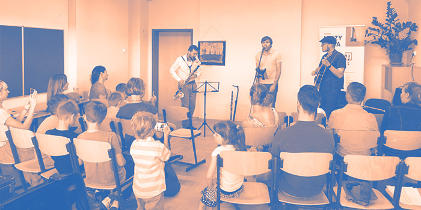
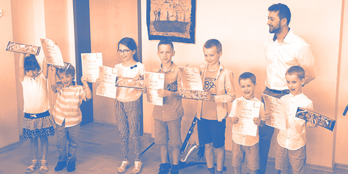

AKTUALNOŚCI
GALERIA





EKIPA MUZYKONU
Tomasz Klepczyński
KLARNET, SAKSOFON
założyciel Pracowni Muzycznej Muzykon i jednocześnie klarnecista i saksofonista, kompozytor
i aranżer. Posiada dwa dyplomy magisterskie z klasyki i jazzu, ale się tym nie chwali. Jego
marzeniem jest grać świetną muzykę ze świetnymi muzykami, a już w swoim dorobku miał taką
okazję (m.in. brał udział w nagraniu albumu Maciej Sikała Septet: “Life in Klub ŻAK”).
Muzykon to jego kolejne marzenie -miejsce, gdzie nie przestaje grać muzyka i wszyscy w niej
żyją.
Sonia Duzdal-Klepczyńska
PIANINO
pianistka, realizator dźwięku, założycielka Muzykonu. Ukończyła klasę fortepianu Akademii
Muzycznej w Gdańsku i warszawską Akademię Filmu i Telewizji. Od wielu lat prowadzi zajęcia
gry na pianinie i bierze udział w różnych projektach realizatorskich (od planu filmowego po
nagrywanie orkiestry symfonicznej). Jej idolem jest Krystian Zimerman. Kocha dobrą muzykę
każdego gatunku, książki i filmy.
Katarzyna Duzdal-Stępień
SKRZYPCE
z zawodu muzyk, mgr skrzypiec, ukończyła Akademię Sztuki w Szczecinie. Zajmuje się
działalnością pedagogiczną, pracuje w Państwowej Szkole Muzycznej w Gdańsku. Angażuje się
także w liczne projekty muzyczne -orkiestrowe i zespołowe. Jest otwarta na różne style
muzyczne od klasyki po muzykę rockową.
Maja Biesek
GITARA
gitarzystka jazzowa, studentka Akademii Muzycznej w Gdańsku. Gra w Narkun Quartet,
Loveina i
prowadzi Maja Biesek Quartet. Brała udział w wielu warsztatach muzycznych w całej
Polsce.
Pracę dydaktyczną rozpoczęła już w 2013 roku. Od tamtej pory zaraża rzeszę młodych
adeptów
miłością do gitary i muzyki, jednocześnie wyciskając z nich siódme poty ćwiczeniami i
wiedzą
muzyczną. W wolnym czasie jeździ na rolkach i gra w gry planszowe.
Arek Czernysz
AKORDEON
wirtuoz akordeonu, absolwent wydziału Jazz i Muzyka Rozrywkowa w Akademii Muzycznej w
Gdańsku. Ma bardzo duże doświadczenie w pracy pedagogicznej, zarówno z dziećmi jak i
dorosłymi. Nie boi się wyzwań, uczy gry od klasyki po jazz, zarówno młodszych uczniów jak i
dorosłych. Stosuje autorski program nauczania, dzięki czemu dopasowuje tempo nauki
indywidualnie dla każdego. W 2016 roku założył Arek Czernysz Trio, z którym wydał bardzo
dobrze przyjętą przez krytyków płytę “Breath”.
Weronika Pryczkowska
WOKAL
związana z wydziałem Musicalu na Akademii Muzycznej im. Stanisława Moniuszki w Gdańsku.
Kocha
śpiewać,grać i tańczyć. Do tej pory umiejętności teatralne i wokalne prezentowała w
spektaklach takich jak: "Wodna opowieść" w Teatrze Junior w Gdyni, "Zakochany Bóg" w Domu
Kultury w Radzionkowie, "Bladolandia" w Teatrze w Wołominie, „Funny Girls”, a także „Miłość
i więcej nic”.
KONTAKT
TEL
+48 575 707 887ADRES
ul. Słowackiego 37Gdańsk Wrzeszcz (obok Garnizonu)
PRZELEWY
44 1910 1048 2267 0001 7996 0001Santander Bank Polska S.A.
Administratorem danych osobowych jest Pracownia Muzyczna Muzykon (80-257 Gdańsk, ul. Słowackiego 37). Dane wpisywane w formularzu kontaktowym będą przetwarzane w celu udzielenia odpowiedzi na przesłane zapytanie zgodnie z regulaminem.